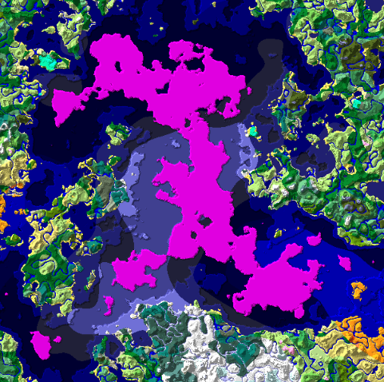

shroomcoin is a joke. it is not an investment, it has no value, nobody is going to buy it from you, and nothing on this page is financial advice.
an ERC-20 token on Arbitrum that gets given to people who find large mushroom islands in Minecraft.
every seed you find is a candidate for a payout, once an island on a seed has paid out, you cannot submit a second island on that same seed
payout = u * 32^(x - 10) * (1 - 2^(6.5 - x))^(n - 1) SHROOM
the payout formula is based off the rough approximation that finding an island with an extra million blocks in size (or 16M in large bioms) is 32x rarer.